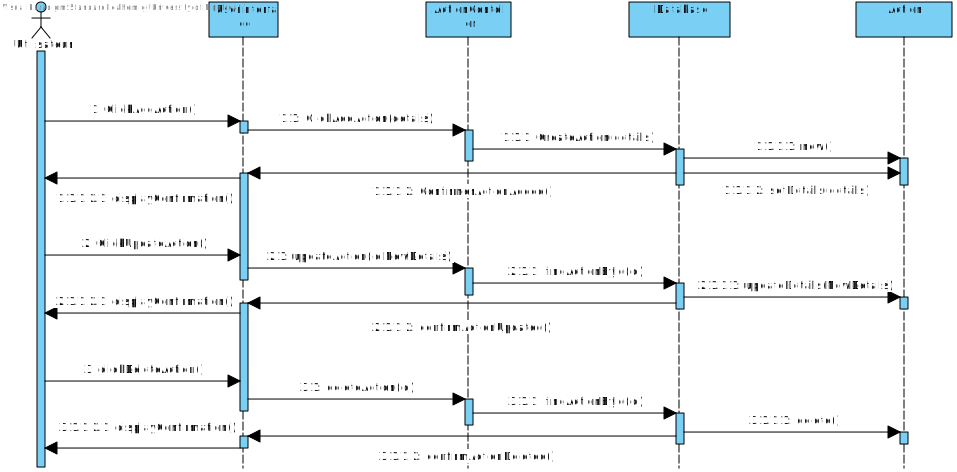
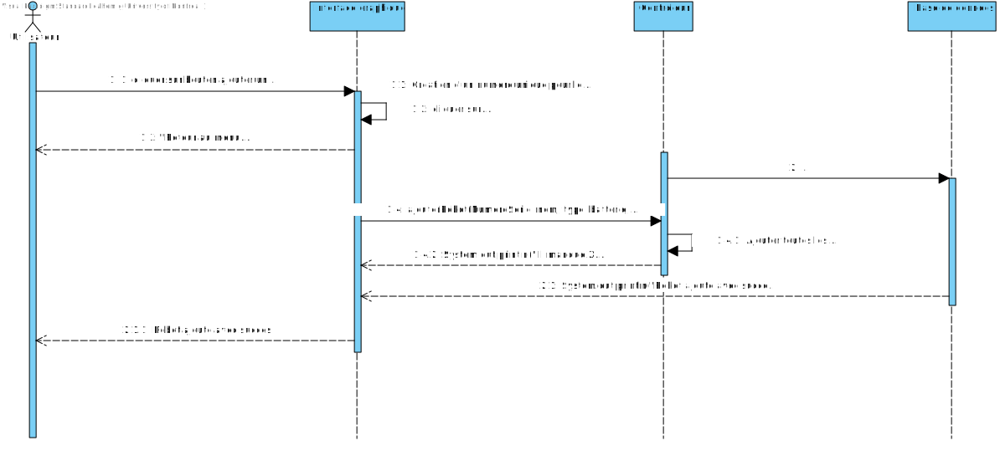

Identification de l'équipe
bytebuilders.
Distribution des Tâches
Lea Hemidj
rapport html, readme ,diagrammes,tests unitaires
Matricule: 20241318
Courriel: lea.hemidj@umontreal.ca
Temps mis: 35 heures
Sophie Bernard
Diagrammes,Tests unitaires
Matricule: 20268160
Courriel: sophie.bernard-doucet@umontreal.ca
Temps mis: 35 heures
Insafe Kibboua
Code
Matricule: 20250710
Courriel: insafe.kibboua@umontreal.ca
Temps mis: 35 heures
Océane Hays
Chargée de code
Matricule: 20240742
Courriel: hays.oceane@umontreal.ca
Temps mis: 35 heures
Hypothèses
Liste des hypothèses prises en compte pour la réalisation du projet.
- Les utilisateurs de Robotix sont familiarisés avec les concepts de base de la robotique et de l'informatique.
- Le système sera utilisé principalement par des entreprises et des institutions ayant une flotte de robots à gérer.
- Les fournisseurs de composants pour robots fourniront des numéros de série et des informations précises sur chaque composante.
- Les robots sont équipés de capteurs et de composants compatibles avec les spécifications du système Robotix.
- Le logiciel Robotix sera utilisé dans des environnements stables avec une connexion Internet fiable pour assurer la communication continue avec les robots.
- Les utilisateurs auront accès à des dispositifs modernes (ordinateurs, tablettes, smartphones) pour interagir avec le système Robotix.
- Le système Robotix est capable de gérer plusieurs utilisateurs et robots simultanément sans compromettre la performance.
- Les informations et les données échangées entre les utilisateurs et les robots seront sécurisées et protégées contre tout accès non autorisé.
- Le support technique sera disponible pour aider les utilisateurs en cas de problèmes ou de questions concernant le système Robotix.
- Les mises à jour du logiciel et des composants matériels seront effectuées régulièrement pour assurer la compatibilité et la performance optimale du système.
Exigences et Analyse
Glossaire
Utilisateur
Personne qui utilise le logiciel Robotix pour gérer des robots et des tâches associées.
Fournisseur
Entreprise ou individu fournissant des composants ou des services pour les robots.
Robot
Machine programmable effectuée pour exécuter diverses tâches autonomes ou semi-autonomes.
Composante
Partie individuelle d'un robot, telle qu'un moteur, une roue, ou un capteur.
Tâche
Ensemble d'actions assignées à un robot pour exécution.
Action
Commande ou série de commandes qu'un robot doit exécuter.
Flotte
Groupe de robots gérés par un utilisateur ou une entreprise.
État
Condition actuelle d'un robot, incluant sa position, sa vitesse, et son niveau de batterie.
Métriques
Indicateurs de performance utilisés pour évaluer l'efficacité des robots.
Connexion
Lien de communication entre le logiciel Robotix et les robots.
Enregistrement
Processus d'ajout d'un nouveau robot au système Robotix.
Commande
Instruction envoyée à un robot pour qu'il exécute une action spécifique.
Maintenance
Ensemble d'activités visant à assurer le bon fonctionnement des robots.
Validation
Processus de vérification des informations saisies par l'utilisateur.
Notification
Message informant l'utilisateur d'un événement ou d'une condition nécessitant une attention.
Profil
Informations personnelles et professionnelles d'un utilisateur ou d'un fournisseur dans le système.
Formulaire
Interface de saisie de données utilisée par l'utilisateur pour entrer des informations.
Erreur
Problème ou défaut empêchant un robot ou le système de fonctionner correctement.
Configuration
Ensemble des paramètres et des options définissant le comportement d'un robot.
Diagramme de cas d'utilisation

Diagrammes d'activités
Diagramme d'activités principal
Diagramme d'activités 1
Diagramme d'activités 2
Diagramme d'activités 3
Diagramme d'activités 4
Diagramme d'activités 5
Analyse des besoins matériels et conceptuels
Exigences matérielles:
- Système d'exploitation: Windows, macOS ou Linux
- Java: Version 8 ou supérieure
- Maven: Version 3.6 ou supérieure
- RAM: 2 Go minimum
- Stockage: 100 Mo d'espace libre
- Connexion Internet fiable
Exigences conceptuelles:
- Gestion des utilisateurs et des fournisseurs
- Enregistrement et gestion des robots
- Création et assignation de tâches et d'actions
- Suivi des métriques et des alertes
- Interaction avec d'autres systèmes via des API
- Interface utilisateur conviviale
Conception (révisée)
Diagramme de classe

Diagrammes de séquence
Diagramme de séquence 1
Diagramme de séquence 2
Diagramme de séquence 3
Diagramme de séquence 4
Diagramme de séquence 5

Application
Tests
Bilan des tests